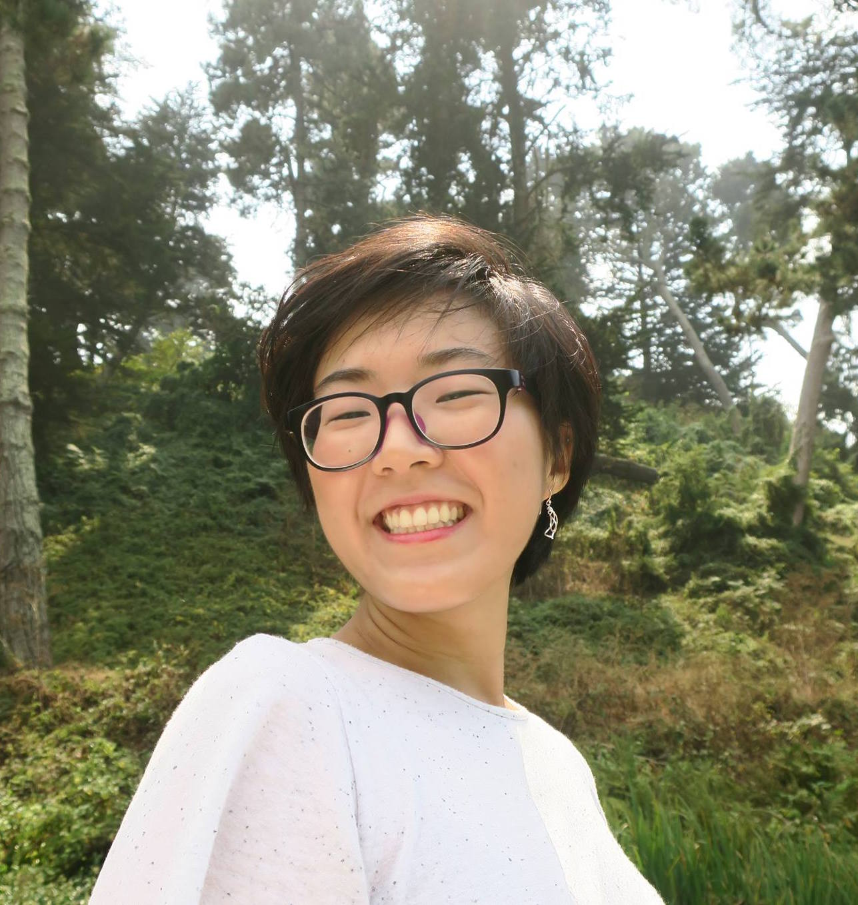

Goeun (she/her) is a student at Ada Developers Academy in Seattle, WA. Prior, she worked as a psychology researcher, crisis counselor, and campus organizer. She knows a few things about cultural and neural implications of eye contact. She occasionally writes newsletters about pop culture and skincare. She's enjoys making kimchi, zines, and maps.
You can email her for party inquries.